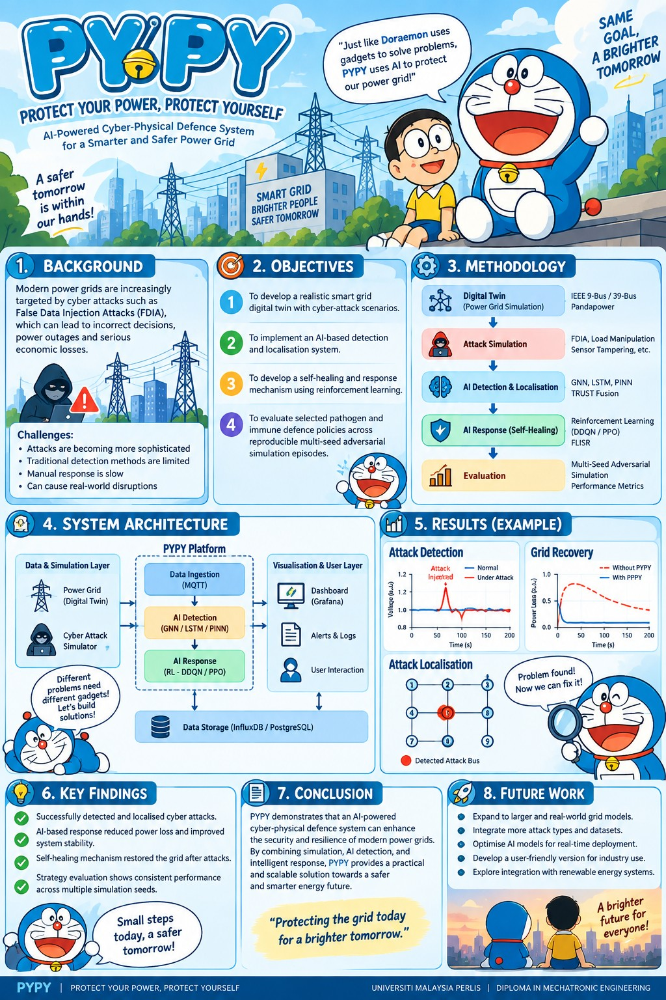

01
IEEE 39-Bus Digital Twin
AC power-system behaviour provides the cyber-physical environment where attacks and recovery can be evaluated safely.
Built around an IEEE 39-Bus digital twin, AI threat detection, decision intelligence and verified self-healing — all demonstrated from one laptop.
PYPY models a power system digitally, watches its cyber-physical behaviour and coordinates the full defence lifecycle without needing a physical smart-grid rig.
Each scene below tells one part of the PYPY defence cycle. The animation explains the idea; the live booth demo shows the real system.
Cyber events such as false data injection or communication disruption alter part of the digital power system.
Telemetry is checked for abnormal cyber-physical behaviour so suspicious activity can be detected and localised.
Detection evidence is combined with grid context so PYPY can support a defensible response rather than showing a black-box decision.
Recovery is only presented as successful when the system has evidence that stable operation has actually been restored.
The technical depth stays behind the interface, but every layer has a clear role.
AC power-system behaviour provides the cyber-physical environment where attacks and recovery can be evaluated safely.
Monitoring and localisation modules identify suspicious behaviour and create evidence for downstream decisions.
Threat evidence and system context are combined so the response can be explained rather than simply asserted.
Recovery logic aims to restore stable operation and verify the outcome before declaring the grid secure.
The final technical report will be published here after it has been formally approved.

If you saw the project at the exhibition and want to discuss the report, implementation or future work, continue directly on WhatsApp.
Chat with Demirel on WhatsApp ↗